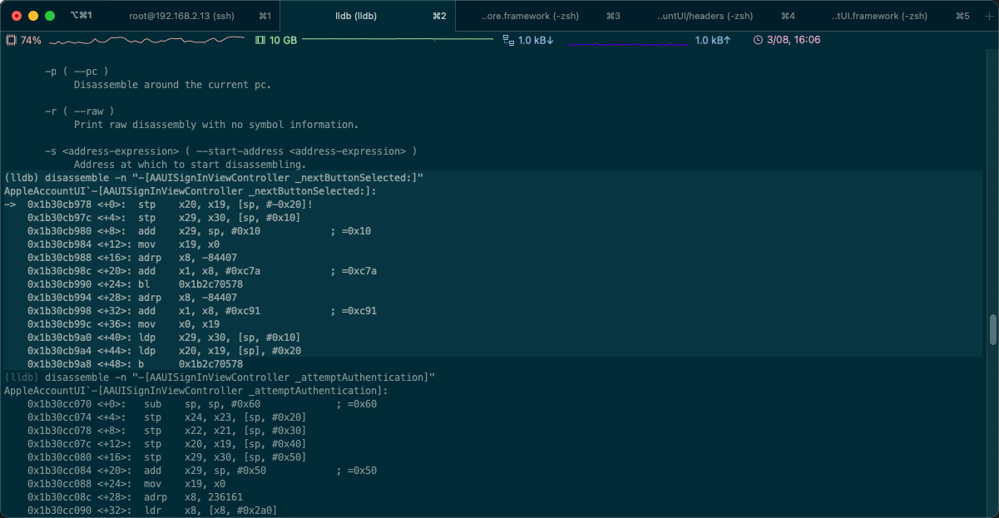
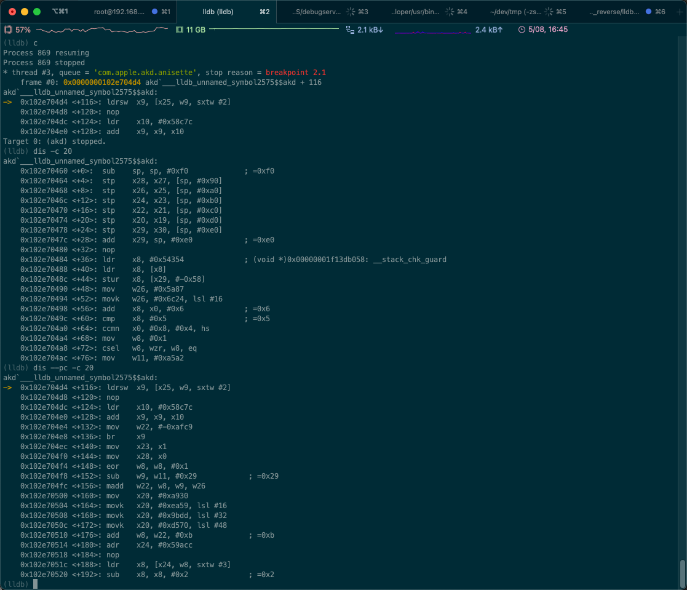

举例
官网的例子
GDB to LLDB command map — The LLDB Debugger (llvm.org)
官网有相关例子：
- Disassemble the current function for the current frame
(lldb) disassemble --frame (lldb) di -f - Disassemble any functions named main
(lldb) disassemble --name main (lldb) di -n main - Disassemble an address range
(lldb) disassemble --start-address 0x1eb8 --end-address 0x1ec3 (lldb) di -s 0x1eb8 -e 0x1ec3 - Disassemble 20 instructions from a given address
(lldb) disassemble --start-address 0x1eb8 --count 20 (lldb) di -s 0x1eb8 -c 20 - Show mixed source and disassembly for the current function for the current frame
(lldb) disassemble --frame --mixed (lldb) di -f -m - Disassemble the current function for the current frame and show the opcode bytes
(lldb) disassemble --frame --bytes (lldb) di -f -b - Disassemble the current source line for the current frame
(lldb) disassemble --line (lldb) di -l
当前frame = 当前函数的 全部汇编代码
dis -f
- 效果
(lldb) dis -f AppleAccountUI`-[AAUISignInViewController _nextButtonSelected:]: -> 0x1b30cb978 <+0>: stp x20, x19, [sp, #-0x20]! 0x1b30cb97c <+4>: stp x29, x30, [sp, #0x10] 0x1b30cb980 <+8>: add x29, sp, #0x10 ; =0x10 0x1b30cb984 <+12>: mov x19, x0 0x1b30cb988 <+16>: adrp x8, -84407 0x1b30cb98c <+20>: add x1, x8, #0xc7a ; =0xc7a 0x1b30cb990 <+24>: bl 0x1b2c70578 0x1b30cb994 <+28>: adrp x8, -84407 0x1b30cb998 <+32>: add x1, x8, #0xc91 ; =0xc91 0x1b30cb99c <+36>: mov x0, x19 0x1b30cb9a0 <+40>: ldp x29, x30, [sp, #0x10] 0x1b30cb9a4 <+44>: ldp x20, x19, [sp], #0x20 0x1b30cb9a8 <+48>: b 0x1b2c70578
指定函数
disassemble -n "-[AAUISignInViewController _nextButtonSelected:]"
- 效果
(lldb) disassemble -n "-[AAUISignInViewController _nextButtonSelected:]" AppleAccountUI`-[AAUISignInViewController _nextButtonSelected:]: -> 0x1b30cb978 <+0>: stp x20, x19, [sp, #-0x20]! 0x1b30cb97c <+4>: stp x29, x30, [sp, #0x10] 0x1b30cb980 <+8>: add x29, sp, #0x10 ; =0x10 0x1b30cb984 <+12>: mov x19, x0 0x1b30cb988 <+16>: adrp x8, -84407 0x1b30cb98c <+20>: add x1, x8, #0xc7a ; =0xc7a 0x1b30cb990 <+24>: bl 0x1b2c70578 0x1b30cb994 <+28>: adrp x8, -84407 0x1b30cb998 <+32>: add x1, x8, #0xc91 ; =0xc91 0x1b30cb99c <+36>: mov x0, x19 0x1b30cb9a0 <+40>: ldp x29, x30, [sp, #0x10] 0x1b30cb9a4 <+44>: ldp x20, x19, [sp], #0x20 0x1b30cb9a8 <+48>: b 0x1b2c70578- 
指定地址范围
disassemble --start-address 0x1b30cb978 --end-address 0x1b30cb990
- 参数说明
- 包括：
start address=0x1b30cb978 - 不包括：
end address=0x1b30cb990
- 包括：
- 输出效果
(lldb) disassemble --start-address 0x1b30cb978 --end-address 0x1b30cb990 AppleAccountUI`-[AAUISignInViewController _nextButtonSelected:]: -> 0x1b30cb978 <+0>: stp x20, x19, [sp, #-0x20]! 0x1b30cb97c <+4>: stp x29, x30, [sp, #0x10] 0x1b30cb980 <+8>: add x29, sp, #0x10 ; =0x10 0x1b30cb984 <+12>: mov x19, x0 0x1b30cb988 <+16>: adrp x8, -84407 0x1b30cb98c <+20>: add x1, x8, #0xc7a ; =0xc7a
额外加上行数：
disassemble --start-address 0x1b30cb978 --count 10
- 输出效果
(lldb) disassemble --start-address 0x1b30cb978 --count 10 AppleAccountUI`-[AAUISignInViewController _nextButtonSelected:]: -> 0x1b30cb978 <+0>: stp x20, x19, [sp, #-0x20]! 0x1b30cb97c <+4>: stp x29, x30, [sp, #0x10] 0x1b30cb980 <+8>: add x29, sp, #0x10 ; =0x10 0x1b30cb984 <+12>: mov x19, x0 0x1b30cb988 <+16>: adrp x8, -84407 0x1b30cb98c <+20>: add x1, x8, #0xc7a ; =0xc7a 0x1b30cb990 <+24>: bl 0x1b2c70578 0x1b30cb994 <+28>: adrp x8, -84407 0x1b30cb998 <+32>: add x1, x8, #0xc91 ; =0xc91 0x1b30cb99c <+36>: mov x0, x19
显示opcode
disassemble --frame --bytes
- 说明
- 和IDA中设置显示opcode的效果类似：解析后的arm指令前面，显示出对应的二进制数据opcode
- 输出效果
(lldb) disassemble --frame --bytes AppleAccountUI`-[AAUISignInViewController _nextButtonSelected:]: -> 0x1b30cb978 <+0>: 0xa9be4ff4 stp x20, x19, [sp, #-0x20]! 0x1b30cb97c <+4>: 0xa9017bfd stp x29, x30, [sp, #0x10] 0x1b30cb980 <+8>: 0x910043fd add x29, sp, #0x10 ; =0x10 0x1b30cb984 <+12>: 0xaa0003f3 mov x19, x0 0x1b30cb988 <+16>: 0xb0f5b248 adrp x8, -84407 0x1b30cb98c <+20>: 0x9131e901 add x1, x8, #0xc7a ; =0xc7a 0x1b30cb990 <+24>: 0x97ee92fa bl 0x1b2c70578 0x1b30cb994 <+28>: 0xb0f5b248 adrp x8, -84407 0x1b30cb998 <+32>: 0x91324501 add x1, x8, #0xc91 ; =0xc91 0x1b30cb99c <+36>: 0xaa1303e0 mov x0, x19 0x1b30cb9a0 <+40>: 0xa9417bfd ldp x29, x30, [sp, #0x10] 0x1b30cb9a4 <+44>: 0xa8c24ff4 ldp x20, x19, [sp], #0x20 0x1b30cb9a8 <+48>: 0x17ee92f4 b 0x1b2c70578
显示某个地址的反汇编
disassemble -s 0x00000001091694a4
输出效果
(lldb) disassemble -s 0x00000001091694a4 Module_Framework`___lldb_unnamed_symbol171165$$Module_Framework: 0x1091694a4 <+0>: ret Module_Framework`___lldb_unnamed_symbol171166$$Module_Framework: 0x1091694a8 <+0>: b 0x1091a45ac ; ___lldb_unnamed_symbol174729$$Module_Framework Module_Framework`___lldb_unnamed_symbol171167$$Module_Framework: 0x1091694ac <+0>: ldr x2, [x0, #0x10] 0x1091694b0 <+4>: br x2 Module_Framework`___lldb_unnamed_symbol171168$$Module_Framework: 0x1091694b4 <+0>: ret Module_Framework`___lldb_unnamed_symbol171169$$Module_Framework: 0x1091694b8 <+0>: b 0x1091a45ac ; ___lldb_unnamed_symbol174729$$Module_Framework Module_Framework`___lldb_unnamed_symbol171170$$Module_Framework: 0x1091694bc <+0>: ldr x2, [x0, #0x10] 0x1091694c0 <+4>: br x2
指定显示的行数
- 显示从 函数最开始 算起的 20行代码
dis -c 20 - 显示从 当前PC位置 算起的 20行代码
dis --pc -c 20
输出效果：
(lldb) c
Process 869 resuming
Process 869 stopped
* thread #3, queue = 'com.apple.akd.anisette', stop reason = breakpoint 2.1
frame #0: 0x0000000102e704d4 akd`___lldb_unnamed_symbol2575$$akd + 116
akd`___lldb_unnamed_symbol2575$$akd:
-> 0x102e704d4 <+116>: ldrsw x9, [x25, w9, sxtw #2]
0x102e704d8 <+120>: nop
0x102e704dc <+124>: ldr x10, #0x58c7c
0x102e704e0 <+128>: add x9, x9, x10
Target 0: (akd) stopped.
(lldb) dis -c 20
akd`___lldb_unnamed_symbol2575$$akd:
0x102e70460 <+0>: sub sp, sp, #0xf0 ; =0xf0
0x102e70464 <+4>: stp x28, x27, [sp, #0x90]
0x102e70468 <+8>: stp x26, x25, [sp, #0xa0]
0x102e7046c <+12>: stp x24, x23, [sp, #0xb0]
0x102e70470 <+16>: stp x22, x21, [sp, #0xc0]
0x102e70474 <+20>: stp x20, x19, [sp, #0xd0]
0x102e70478 <+24>: stp x29, x30, [sp, #0xe0]
0x102e7047c <+28>: add x29, sp, #0xe0 ; =0xe0
0x102e70480 <+32>: nop
0x102e70484 <+36>: ldr x8, #0x54354 ; (void *)0x00000001f13db058: __stack_chk_guard
0x102e70488 <+40>: ldr x8, [x8]
0x102e7048c <+44>: stur x8, [x29, #-0x58]
0x102e70490 <+48>: mov w26, #0x5a87
0x102e70494 <+52>: movk w26, #0x6c24, lsl #16
0x102e70498 <+56>: add x8, x0, #0x6 ; =0x6
0x102e7049c <+60>: cmp x8, #0x5 ; =0x5
0x102e704a0 <+64>: ccmn x0, #0x8, #0x4, hs
0x102e704a4 <+68>: mov w8, #0x1
0x102e704a8 <+72>: csel w8, wzr, w8, eq
0x102e704ac <+76>: mov w11, #0xa5a2
(lldb) dis --pc -c 20
akd`___lldb_unnamed_symbol2575$$akd:
-> 0x102e704d4 <+116>: ldrsw x9, [x25, w9, sxtw #2]
0x102e704d8 <+120>: nop
0x102e704dc <+124>: ldr x10, #0x58c7c
0x102e704e0 <+128>: add x9, x9, x10
0x102e704e4 <+132>: mov w22, #-0xafc9
0x102e704e8 <+136>: br x9
0x102e704ec <+140>: mov x23, x1
0x102e704f0 <+144>: mov x28, x0
0x102e704f4 <+148>: eor w8, w8, #0x1
0x102e704f8 <+152>: sub w9, w11, #0x29 ; =0x29
0x102e704fc <+156>: madd w22, w8, w9, w26
0x102e70500 <+160>: mov x20, #0xa930
0x102e70504 <+164>: movk x20, #0xea59, lsl #16
0x102e70508 <+168>: movk x20, #0x9bdd, lsl #32
0x102e7050c <+172>: movk x20, #0xd570, lsl #48
0x102e70510 <+176>: add w8, w22, #0xb ; =0xb
0x102e70514 <+180>: adr x24, #0x59acc
0x102e70518 <+184>: nop
0x102e7051c <+188>: ldr x8, [x24, w8, sxtw #3]
0x102e70520 <+192>: sub x8, x8, #0x2 ; =0x2
(lldb)
